리눅스마스터-2급 (2023-12-09 기출문제)
1과목: 리눅스 운영 및 관리
1. 다음은 다운로드 받은 소스 파일의 내용만을 확인하는 과정이다. (괄호) 안에 들어갈 내용으로 알맞은 것은?
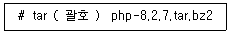
- jxvf
- Jxvf
- jtvf
- Jtvf
(정답률: 67%)
2. 다음 설명에 해당하는 파일명으로 알맞은 것은?
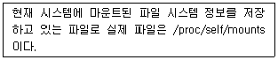
- /etc/fstab
- /etc/mtab
- /etc/mounts
- /proc/partitions
(정답률: 58%)
3. 다음 (괄호) 안에 들어갈 내용으로 알맞은 것은?
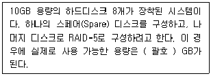
- 40
- 50
- 60
- 70
(정답률: 79%)
4. 다음 설명에 해당하는 RAID 관련 기술로 알맞은 것은?
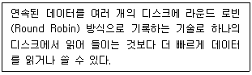
- 스트라이핑(Striping)
- 미러링(Mirroring)
- 패리티(Parity)
- ECC(Error Check & Correction)
(정답률: 87%)
5. 다음 중 LVM 구성할 때 가장 먼저 생성되는 것은?
- VG(Volume Group)
- LV(Logical Volume)
- PV(Physical Volume)
- PE(Physical Extend)
(정답률: 79%)

6. 다음 중 프린터 큐의 작업 정보를 확인하는 명령어로 알맞은 것은?
- lp
- lpr
- lprm
- lpstat
(정답률: 76%)
7. 다음 설명에 해당하는 명칭으로 알맞은 것은?
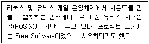
- ALSA
- CUPS
- SANE
- OSS
(정답률: 73%)
8. 다음 중 스캐너 사용과 관련된 프로그램으로 알맞은 것은?
- ALSA
- CUPS
- SANE
- LPRng
(정답률: 87%)
9. 다음 중 데비안 계열 리눅스에서 환경 설정 파일도 포함해서 vsftpd 패키지를 제거하는 명령으로 알맞은 것은?
- apt-get purge vsftpd
- apt-get remove vsftpd
- apt-get erase vsftpd
- apt-get delete vsftpd
(정답률: 62%)
10. 다음 중 rpm 명령으로 의존성이 있는 패키지를 제거하는 명령으로 알맞은 것은?
- rpm -d nmap --nodeps
- rpm -e nmap --nodeps
- rpm erase nmap --nodeps
- rpm delete nmap -nodeps
(정답률: 68%)
11. 다음은 확장 패키지 관련 저장소를 설치하는 과정이다. (괄호) 안에 들어갈 내용으로 알맞은 것은?
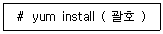
- epel
- epel-repository
- epel-release
- epel-download
(정답률: 65%)
12. 다음 설명에 해당하는 명령으로 알맞은 것은?
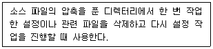
- make init
- make zero
- make clean
- make neat
(정답률: 83%)
13. 다음 중 프로그램을 소스 파일로 설치하는 과정으로 알맞은 것은?
- configure → make → make install
- make → configure → make install
- make → make install → configure
- make install → configure → make
(정답률: 84%)
14. 다음 중 리눅스에서 사용되는 온라인 패키지 관리 도구로 거리가 먼 것은?
- dnf
- rpm
- zypper
- apt-get
(정답률: 55%)
15. 다음 중 레드햇 계열 리눅스에서 사용되는 패키지 관리 도구로 거리가 먼 것은?
- dnf
- rpm
- zypper
- yum
(정답률: 72%)
16. 다음중 vi 편집기의 ex 명령모드에 대한 설명으로 틀린 것은?
- w → 작업중인 내용을 저장한다.
- w 파일명 → 지정한 '파일명'으로 저장한다.
- wq → 변경된 내용을 저장하고 종료한다.
- q → 수정된 사항이 있어도 무조건 종료한다.
(정답률: 83%)
17. 다음 (괄호) 안에 들어갈 내용으로 알맞은 것은?
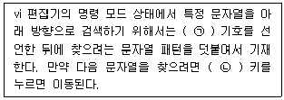
- ㉠ /, ㉡ n
- ㉠ ?, ㉡ n
- ㉠ /, ㉡ N
- ㉠ ?, ㉡ N
(정답률: 76%)
18. 다음 중 vi 편집기에서 linux로 끝나는 줄의 마지막에 마침표(.)을 덧붙이도록 치환하는 명령으로 알맞은 것은?
- :% s/linux./linux$/
- :% s/linux$/linux./
- :% s/linux/linux./
- :% s/linux/linux$/
(정답률: 80%)
19. 다음 중 emacs 편집기를 개발한 인물로 알맞은 것은?
- 빌 조이
- 리처드 스톨만
- 브람 브레나르
- 귀도 반 로섬
(정답률: 83%)
20. 다음 중 nano 편집기에서 현재 커서가 위치한 줄의 처음으로 이동할 때 사용하는 키 조합으로 알맞은 것은?
- [Ctrl]+[a]
- [Ctrl]+[e]
- [Ctrl]+[o]
- [Ctrl]+[i]
(정답률: 79%)
21. 다음 중 X 윈도 환경에서만 사용 가능한 편집기로 알맞은 것은?
- nano
- pico
- kwrite
- vim
(정답률: 70%)
22. 다음 중 작업번호가 2번인 백그라운드 프로세스를 종료시키는 명령으로 알맞은 것은?
- kill 2
- kill %2
- kill -j 2
- kill -b 2
(정답률: 74%)
23. ps 명령의 상태(STAT) 코드 중에 작업은 종료되었으나 부모프로세스에 의해 회수되지 않아 메모리를 차지하고 상태를 나타내는 값으로 알맞은 것은?
- R
- S
- T
- Z
(정답률: 78%)
24. 다음 중 프로세스 관련 명령어로 설정 가능한 NI 값의 범위로 알맞은 것은?
- -19 ~ 19
- -19 ~ 20
- -20 ~ 19
- -20 ~ 20
(정답률: 77%)
25. cron을 이용해서 해당 스크립트를 매주 1회씩 주기적으로 실행하려고 한다. (괄호) 안에 들어갈 내용으로 알맞은 것은?
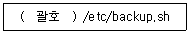
- 1 1 1 * *
- 1 1 * 1 *
- 1 1 * * 1
- * 1 1 1 *
(정답률: 74%)
26. 다음 명령의 결과에 대한 설명으로 알맞은 것은?
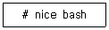
- bash 프로세스의 우선순위를 높인다.
- bash 프로세스의 우선순위를 낮춘다.
- bash 프로세스의 우선순위 값을 출력한다.
- 사용법 오류로 인해 실행되지 않는다.
(정답률: 57%)
27. 다음 중 포어그라운드 프로세스를 종료하기 위해 사용하는 키 조합으로 알맞은 것은?
- [Ctrl]+[c]
- [Ctrl]+[a]
- [Ctrl]+[z]
- [Ctrl]+[d]
(정답률: 65%)
28. 다음 중 standalone 방식과 inetd 방식에 대한 비교 설명으로 알맞은 것은?
- inetd 방식이 standalone 방식보다 메모리 관리가 더 효율적이다.
- inetd 방식이 standalone 방식보다 관련 서비스 처리가 빠르다.
- 웹과 같은 빈번한 요청이 들어오는 서비스는 inetd 방식이 적합하다.
- 사용자가 많은 서비스는 standalone 방식보다 inetd 방식이 적합하다.
(정답률: 70%)
29. 다음 중 사용자가 본인이 실행한 백그라운드 프로세스 목록을 확인하는 명령어로 가장 알맞은 것은?
- ps
- bg
- jobs
- exec
(정답률: 70%)
30. 다음 보기의 시그널을 번호값이 낮은 순부터 높은 순으로 정렬했을 때 세 번째에 해당하는 시그널 이름으로 알맞은 것은?
- SIGTSTP
- SIGKILL
- SIGINT
- SIGTERM
(정답률: 67%)
31. 다음 (괄호) 안에 들어갈 내용으로 알맞은 것은?
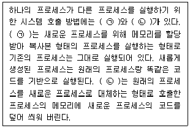
- ㉠ exec, ㉡ fork
- ㉠ fork, ㉡ exec
- ㉠ background, ㉡ foreground
- ㉠ foreground, ㉡ background
(정답률: 77%)
32. 다음 설명에 해당하는 파일명으로 가장 알맞은 것은?
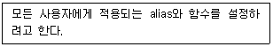
- /etc/.bashrc
- /etc/.bash_profile
- /etc/bashrc
- /etc/profile
(정답률: 56%)
33. 다음 중 (괄호) 안에 들어갈 명령의 결과로 알맞은 것은?
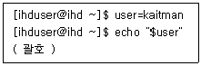
- 아무것도 출력되지 않는다.
- $user
- ihduser
- kaitman
(정답률: 77%)
34. 다음 중 가장 최근에 실행한 명령을 재실행할 때 사용하는 명령으로 알맞은 것은?
- !0
- !1
- !!
- history -1
(정답률: 76%)
35. 다음은 셸 변수를 선언한 후에 관련 내용을 확인하는 과정이다. (괄호) 안에 들어갈 명령어로 알맞은 것은?
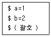
- printenv
- unset
- env
- set
(정답률: 70%)
36. 다음은 로그인 셀을 확인하는 과정이다. (괄호) 안에 들어갈 명령어로 알맞은 것은?
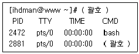
- ps
- chsh
- jobs
- shells
(정답률: 60%)
37. 다음 (괄호) 안에 들어갈 파일명으로 알맞은 것은?
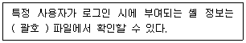
- /etc/passwd
- /etc/shells
- /etc/bashrc
- /etc/profile
(정답률: 65%)
38. 다음은 ihdman 사용자가 변경 가능한 셀의 목록 정보를 확인하는 과정이다. (괄호) 안에 들어갈 내용으로 알맞은 것은?
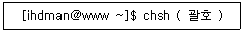
- -l
- -u
- -s
- -c
(정답률: 75%)
39. 다음 설명에 해당하는 셀로 알맞은 것은?
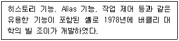
- bourne shell
- csh
- dash
- bash
(정답률: 59%)
40. 다음 중 /etc/fstab 파일의 첫 번째 필드에 설정할 수 있는 값으로 틀린 것은?
- UUID
- LABEL
- 마운트 포인트
- 장치 파일명
(정답률: 63%)
41. 다음은 ihduser 사용자의 홈 디렉터리가 차지하고 있는 디스크 용량을 확인하는 과정이다. (괄호) 안에 들어갈 명령어로 알맞은 것은?
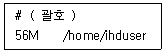
- df -sh ~ihduser
- quota ihduser
- du -sh ~ihduser
- df -sh /home/ihduser
(정답률: 63%)
42. 다음중 fdisk 작업 후에 변경된 파티션 정보를 저장하고 종료하는 명령어로 알맞은 것은?
- n
- w
- x
- q
(정답률: 65%)
43. 다음 결과에 해당하는 명령어로 알맞은 것은?
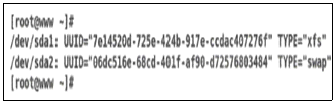
- lsblk
- blkid
- fdisk
- uuid
(정답률: 62%)
44. 다음 그림에 해당하는 명렁어로 알맞은 것은?
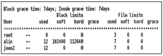
- quota
- edquota
- repquota
- xfs_quota
(정답률: 49%)
45. 다음 중 설정된 umask 값이 0022일 경우 생성되는 파일의 허가권 값으로 알맞은 것은?
- -rw-r--r--
- -rw-rw-r--
- -rwxr-xr-x
- -rwxrwxr-x
(정답률: 70%)
46. project 그룹에 속한 사용자들이 /project 디렉터리에서 파일 생성은 자유로우나 삭제는 본인의 생성한 파일만 가능하도록 설정하려고 한다. 또한 파일 생성 시 자동으로 그룹 소유권이 project로 부여되도록 설정하려고 한다. /project 디렉터리의 정보가 다음과 같을 때 관련 명령으로 알맞은 것은?
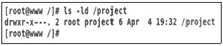
- chmod 1770 /project
- chmod 2770 /project
- chmod 3770 /project
- chmod 5770 /project
(정답률: 63%)
47. 다음 명령의 결과로 설정되는 lin.txt 파일의 허가권 값으로 알맞은 것은?
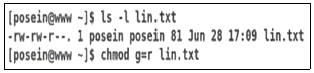
- ----r-----
- -r--r--r--
- -rw-r--r--
- -rw-rw----
(정답률: 78%)
48. 다음 중 파일이나 디렉터리의 소유자를 변경하는 명령어로 알맞은 것은?
- ls
- chgrp
- chown
- umask
(정답률: 84%)
2과목: 리눅스 활용
49. 다음중 IPv4의 C 클래스 네트워크 주소 대역으로 알맞은 것은?
- 191.0.0.0 ~ 223.255.255.255
- 192.0.0.0 ~ 223.255.255.255
- 191.0.0.0 ~ 224.255.255.255
- 192.0.0.0 ~ 224.255.255.255
(정답률: 66%)
50. 다음 중 클라우드 서비스에서 이용자의 설정이 많은 순서로 나열된 것은?
- SaaS ＞ PaaS ＞ IaaS
- PaaS ＞ SaaS ＞ IaaS
- Iaas ＞ PaaS ＞ Saas
- IaaS ＞ SaaS ＞ PaaS
(정답률: 64%)
51. 다음 설명에 해당하는 명칭으로 알맞은 것은?
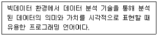
- Hadoop
- NoSQL
- R
- Cassandra
(정답률: 66%)
52. 다음 중 CPU 반가상화를 지원하는 가상화 기술로 알맞은 것은?
- Xen
- KVM
- Docker
- VirtualBox
(정답률: 63%)
53. 다음 상황에 적합한 클리스터링 기술로 알맞은 것은?
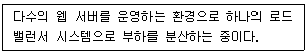
- 고계산용 클러스터
- 베어울프 클러스터
- 고가용성 클러스터
- HPC 클러스터
(정답률: 72%)
54. 다음 중 SYN Flooding 공격과 같은 네트워크 상태 정보를 확인하는 명령으로 알맞은 것은?
- ip
- arp
- route
- netstat
(정답률: 69%)
55. 다음 설명에 해당하는 파일명으로 알맞은 것은?
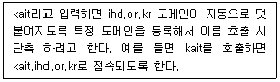
- /etc/hosts
- /etc/resolv.conf
- /etc/sysconfig/network
- /etc/sysconfig/network-scripts
(정답률: 50%)
56. 다음 설정을 확인할 수 있는 파일명으로 알맞은 것은?
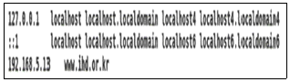
- /etc/hosts
- /etc/resolv.conf
- /etc/sysconfig/network
- /etc/sysconfig/network-scripts
(정답률: 63%)
57. 다음 중 네트워크 카드에 물리적으로 케이블이 연결되었는지를 점검할 때 사용하는 명령어로 알맞은 것은?
- ifconfig
- ss
- netstat
- mii-tool
(정답률: 63%)
58. 다음 중 시스템에 설정된 게이트웨이 주소값을 확인하는 명령어로 틀린 것은?
- ip
- route
- netstat
- ethtool
(정답률: 52%)
59. 다음 설명과 같은 경우에 사용가능한 IP 주소의 개수로 알맞은 것은?
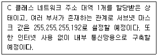
- 252
- 250
- 248
- 244
(정답률: 57%)
60. IP 주소 및 서브넷 마스크값이 다음과 같을 때 설정되는 브로드캐스트 주소값으로 알맞은 것은?
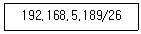
- 192.168.5.190
- 192.168.5.191
- 192.168.5.192
- 192.168.5.193
(정답률: 56%)
61. 다음 중 로컬 시스템에 있는 파일을 FTP 서버에 업로드하는 경우에 사용하는 명령어로 알맞은 것은?
- get
- put
- recv
- hash
(정답률: 76%)
62. 다음은 원격지의 IP 주소가 192.168.5.13번인 ssh 서버에 kaitman 계정으로 변경해서 접속하는 과정이다. (괄호) 안에 들어갈 내용으로 알맞은 것은?
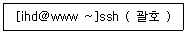
- kaitman@192.168.5.13
- -n kaitman 192.168.5.13
- -p kaitman 192.168.5.13
- -U kaitman 192.168.5.13
(정답률: 65%)
63. 다음은 원격지 텔넷 서버에 계정을 변경해서 접속하는 과정이다. (괄호) 안에 들어갈 옵션으로 알맞은 것은?
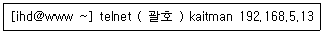
- -u
- -n
- -p
- -l
(정답률: 43%)
64. 다음중 메일 서버 간의 메시지 교환에 사용되는 프로토콜로 알맞은 것은?
- SNMP
- SMTP
- IMAP
- POP3
(정답률: 81%)
65. 다음 설명에 해당하는 인터넷 서비스로 알맞은 것은?
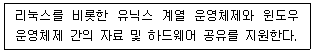
- NFS
- SAMBA
- Gopher
- FTP
(정답률: 69%)
66. 다음 중 X 윈도가 설치되지 않은 환경의 콘솔 창에서 사용할 수 있는 웹 브라우저로 알맞은 것은?
- links
- firefox
- opera
- safari
(정답률: 68%)
67. 다음 설명에 해당하는 국제기구로 알맞은 것은?
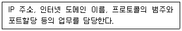
- ICANN
- IEEE
- TIA
- ISO
(정답률: 66%)
68. 다음 중 네트워크 프로토콜에 할당된 포트 번호를 확인할 수 있는 파일명으로 알맞은 것은?
- /etc/protocol
- /etc/protocols
- /etc/service
- /etc/services
(정답률: 53%)
69. 다음 중 OSI 모델의 전송 계층에서 사용되는 프로토콜 데이터 단위로 알맞은 것은?
- Packet
- Segment
- frame
- bit
(정답률: 71%)
70. 다음 설명에 해당하는 네트워크 프로토콜로 알맞은 것은?
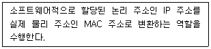
- IP
- ICMP
- ARP
- UDP
(정답률: 76%)
71. 다음 그림에 해당하는 네트워크 케이블로 알맞은 것은?
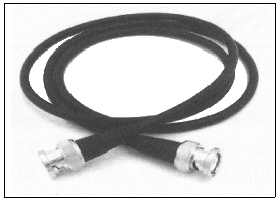
- STP
- UTP
- BNC
- 광케이블
(정답률: 62%)
72. 다음 중 인터네트워킹 장비를 OSI 모델의 하위 계층부터 나열한 순서로 알맞은 것은?
- Router-Bridge-Repeater
- Router-Repeater-Bridge
- Repeater-Bridge-Router
- Bridge-Repeater-Router
(정답률: 71%)
73. 다음 중 이미지 뷰어 프로그램으로 가장 거리가 먼 것은?
- totem
- ImageMagicK
- Eog
- Gimp
(정답률: 73%)
74. 다음 중 사용자가 X 윈도 실행을 실행할 경우 관련 키 정보를 저장하는 파일로 알맞은 것은?
- .Xsession
- .Xsetup
- .Xinitrc
- .Xauthority
(정답률: 66%)
75. 다음 중 X 클라이언트를 원격지로 전송하기 위해 변경하는 환경변수로 알맞은 것은?
- VISUAL
- DISPLAY
- TERM
- XTERM
(정답률: 68%)
76. 다음 중 X 서버에서 IP 주소가 192.168.12.22번인 X 클라이언트를 허가하는 명령으로 알맞은 것은?
- xhost 192.168.12.22
- xhost * 192.168.12.22
- xhost - 192.168.12.22
- xhost add 192.168.12.22
(정답률: 57%)
77. 다음 중 윈도 매니저 종류로 틀린 것은?
- Metacity
- Enlightenment
- Window Maker
- XFce
(정답률: 56%)
78. 다음 중 KDE에 대한 설명으로 틀린 것은?
- Metacity라는 윈도 매니저를 사용한다.
- 데스크톱 환경의 일종이다.
- Qt 라이브러리를 기반으로 만들어졌다.
- 리눅스뿐만 아니라 FreeBSD, Solaris, OS X 등도 지원한다.
(정답률: 53%)
79. 다음 중 사용자 로그인 및 세션 관리 역할을 수행하는 X 윈도의 구성요소로 알맞은 것은?
- 디스플레이 매니저
- 데스크톱 환경
- 윈도 매니저
- 유저 인터페이스
(정답률: 49%)
80. 다음은 시스템 부팅 시 X 윈도가 실행되도록 설정하는 과정이다. (괄호) 안에 들어갈 내용으로 알맞은 것은?
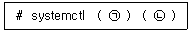
- ㉠ set-default, ㉡ multi-user
- ㉠ set-default, ㉡ graphical
- ㉠ get-default, ㉡ multi-user.target
- ㉠ get-default, ㉡ graphical.target
(정답률: 55%)
PV(물리) ⇒ VG(그룹) ⇒ LV(논리) 순서로 진행됩니다.
가장 먼저 실제 하드디스크를 LVM용으로 초기화하는 PV(Physical Volume) 단계가 필요합니다.
그 후 PV들을 묶어 큰 덩어리(VG)를 만들고, 그걸 다시 사용자가 쓸 크기(LV)로 자르는 구조입니다.
따라서 가장 기초적인 단계인 ③번(PV)이 정답입니다.
---
무조건 외워야 하는 문제로, 난이도는 '하' 입니다.
LVM 문제는 리눅스 관리자 실무에서도 중요하고 시험에도 정말 자주 나옵니다.
순서만 외우면 거저 먹는 문제입니다.
물리(P)가 먼저다 -> 그룹(G)으로 묶고 -> 논리(L)로 자른다 (P -> G -> L)
---
PE(Physical Extent): PV의 최소 할당 단위
LVM 시스템에서 물리 볼륨(PV, Physical Volume)을 구성하는 일정한 크기의 작으 블록(청크) 단위를 말하며
일반적으로 1 PE의 기본 크기는 4MiB(메가바이트)로 설정됩니다.
LVM은 여러 개의 PE를 모아서 논리 볼륨(LV, Logical Volume)을 구성하며, 사용자는 이 LV를 마치 하나의 디스크 파티션처럼 사용할 수 있습니다.